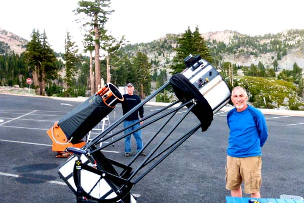

OR 7/25/14: Lassen Volcanic National Park
by Steve Gottlieb
|
Friday night (July 25th), was the last of four consecutive clear nights at Lassen. And as a nice conclusion, we had our best conditions on this observing adventure. There was no wind or dew at the Bumpass Hell lot and transparency and seeing were both very good to excellent. Here's the set-up on Bumpass with Mark Wagner and another with the view towards the south. Interacting galaxies and compact galaxy groups were mostly the targets for the night, along with the unusual globular cluster Arp GC2, which may have been captured by the Milky Way from the Sagittarius Dwarf Spheroidal galaxy. 
|

|
VV 158 is chain of 4 CGCG galaxies with a total length of 5.5', and oriented WNW to ESE. Using 375x,
VV 59 was picked up fairly easily at 260x as an faint elongated glow, but best view at 375x. The brighter component ( An extremely faint glow extended 15" southwest, increasing the overall length to roughly 25". With careful viewing, a slightly brighter 6"-8" knot (core of
At 260x, this superthin galaxy appeared extremely faint, fairly small, edge-on 6:1 SW-NE, 0.6'x0.1', very low even surface brightness. A mag 14.5 star is at the
northeast end. Although images show the galaxy extends northeast of the star, it appeared as a ghostly splinter extending southwest of the star. Located 2.3' SE of a mag 10/12.5
pair at 25". Member of the
This small physical triplet contains two CGCG galaxies and a MAC. At 375x
Very faint, moderately large, low surface brightness glow, roughly 2' diameter. Contains a small, slightly brighter core or knot near the center. Slightly grainy
or mottled appearance, but no clear resolution except around the edges (possibly field stars). Located 5' SW of a distinctive asterism consisting of a 1.5' east-west chain of four
stars, with a fifth star 0.4' south of the center of the chain. Located 2.5° WNW of In 1965 (Galactic Structure, University of Chicago Press, page 401), Arp noted a new "...sparse globular cluster a plate of which was formed in Baade's file..." and reported it as Anonymous. Arp GC 2, along with Terzan 7, Terzan 8 and others lie very close to the Sagittarius Dwarf Spheroidal galaxy (discovered in 1994) and appear to be former members of that galaxy.
At 375x, all four members of HCG 86 were easily visible (direct vision), with
Striking example of a barred spiral with a prominent 1.5'x0.5' central bar oriented directly east-west. The bar contains a bright 30" core, which increases to a
quasi-stellar nucleus. A bright arm is attached at the east end of the bar and extends due north for 0.7', at a right angle to the bar. A bright, elongated N-S "knot" is embedded
in the middle (superimposed companion
Using 260x and 375x,
Using 375x,
At 260x, this multi-armed barred spiral appeared bright, fairly large, elongated 3:2 ~N-S, sharply concentrated with a striking, very bright core. Extending SSW to NNE is a slightly brighter bar (fairly low contrast). The very begnning of a spiral arm is evident as an elongated glow at the north end of the bar, extending a very short distance to the northwest. The view was improved at 385x with a strong hint of a second spiral arm beginning at the south end of the bar and starting to bend east. Contains a bright, sharp stellar nucleus. A mag 10 star is 3' SE and a mag 12 star is at the southwest edge. |